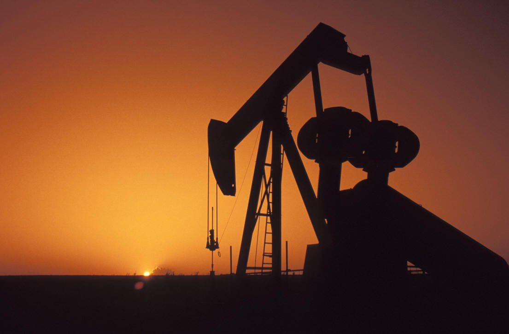

Глобальные проблемы современности — это совокупность социально-природных проблем, от решения которых зависит социальный прогресс человечества и сохранение цивилизации. Эти проблемы характеризуются динамизмом, возникают как объективный фактор развития общества и для своего решения требуют объединённых усилий всего человечества. Глобальные проблемы взаимосвязаны, охватывают все стороны жизни людей и касаются всех стран.
Экологическая проблема — изменение природной среды, ведущее к нарушению структуры и функционирования природы. Может быть как антропогенным, так и результатом стихийных бедствий. Экологические проблемы могут быть локальными (затрагивается определенная местность), региональными (конкретный регион) и глобальными (воздействие оказывается на всю биосферу планеты).
К глобальным экологическим проблемам относятся проблемы, которые создают угрозу всему человечеству.
Региональные проблемы охватывают территории больших регионов, и их влияние сказывается на значительной части населения. Например, загрязнение Волги - это региональная проблема всего Поволжья.
Демографическая проблема
Демографический кризис — резкое изменение численности населения. Под демографическим кризисом может пониматься как убыль населения, так и перенаселение территорий.
Казалось бы, ничего серьезного, но вследствие этого может произойти демографический кризис, которой повлечет за собой и другие проблемы, в том числе и экономические.
Демографический взрыв и неравномерность прироста населения по разным регионам ведет к обострению смежных глобальных проблем:
Демографического давления на окружающую среду.
Этнические и межкультурные проблемы (межэтнические и межкультурные конфликты).
Проблемы эмигрантов и беженцев.
Проблема нищеты, бедности и недостатка продовольствия.
Проблема урбанизации («трущобной урбанизации»).
Безработицу, деформацию в размещении производительных сил и т.д.
Угроза мировой войны
Важным фактом теории глобальных проблем явилось осознание реальной возможности самоуничтожения человечества. Проблема войны и мира превратилась в глобальную буквально на наших глазах и, прежде всего, врезультате резко возросшей мощи оружия. Во всем мире на вооружение и содержание армии расходуется три миллиарда долларов в день.
Причинами мирового военного конфликта могут стать:
Неблагоприятное стечение обстоятельств .
Использование ядерных арсеналов и прочего вооружения террористами террористами.
Разрастание локальных конфликтов.
В наши дни угрозы национальной безопасности России исходят от:
Конфликты на Западе: Россия – США – НАТО .
Конфликты на Востоке: Россия – Япония – Китай.
Конфликты на Юге: исламский фактор (за которым стоят Афганистан, Пакистан, Турция, Саудовская Аравия, США).
Сырьевая проблема.

Глобальная сырьевая проблема - это проблема обеспечения человечества сырьем. Использование сырьевых ресурсов на нашей планете растет значительными темпами. Современное хозяйство использует около 200 видов минерального сырья. Минеральными ресурсами принято называть полезные ископаемые, извлеченные из недр. Полезные ископаемые - это природные минеральные вещества в земной коре, которые при данном состоянии развития техники могут быть с достаточным экономическим эффектом извлечены и использованы в народном хозяйстве в естественном виде или после предварительной переработки.
Проблема вызвана следующими факторами
Истощением разрабатываемых месторождений угля, нефти, железных и других руд.
Ограниченностью разведанных запасов нефти и природного газа.
Открытием и добычей полезных ископаемых в худших по сравнению с прежними условиях.
Увеличением территориального разрыва между районами добычи и потребления полезных ископаемых.
Проблема здоровья людей
Глобальная проблема здоровья и долголетия во многом является производной от других глобальных проблем, вызывающих заболевания, способствующих их распространению, сокращающих трудоспособный и репродуктивный возраст человека и продолжительность его жизни. Проблема здоровья вытекает из всех вышеописанных проблем.
Глобальная проблема состояния здоровья сегодня конкретизируется по ряду следующих аспектов:
Высокая детская смертность и небольшая продолжительность жизни (до 60 лет) в развивающихся странах и странах бывшего социалистического лагеря (Евразия).
Высокая детская смертность от недоедания и болезней.
Растущая динамика смертности от так называемых «болезней цивилизации» (сердечно-сосудистые заболевания, хронические заболевания легких и т.д.) и заболеваний с неинфекционной этиологией (рак, диабет и т.д.). Смертность более 36 млн человек ежегодно.
Растущая смертность от инфекционных заболеваний.
Быстрое распространение СПИДа.
Высокая смертность от эпидемии инфекционных заболеваний, которые считались уже побежденными (оспа, малярия, корь, менингит, чума, холера).
Увеличение числа психических заболеваний (например, шизофрении).
Рост числа суицидов (особенно, в развитых странах и странах с переходной экономикой).
Появление новых смертоносных инфекций (лихорадка Эбола, COVID-19).
Подведение итогов
У человечества множество глобальных проблем, которые могут в итоге привести к его гибели. Решить эти проблемы можно только в том случае, если консолидировать усилия – в противном случае усилия одной или нескольких стран будут сведены к нулю. Таким образом цивилизационное развитие и решение проблем всеобщего масштаба возможны только в том случае, если выживание человека как вида станет выше экономических и государственных интересов.
Уважаемый читатель, прошу тебя пройти мой анонимный опрос: